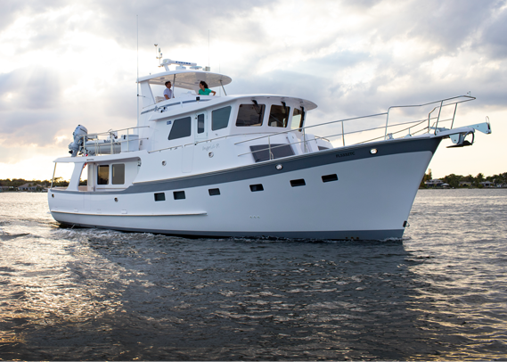
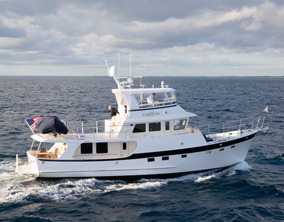
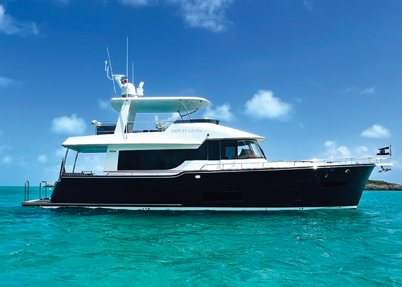

Join us this fall at the Annapolis Power Boat Show and Ft. Lauderdale International Boat Show. Our veteran sales team is looking forward to showing you why we’re confident we build some of the best long- distance trawlers and performance cruisers available today.


Krogen 58
Krogen 52

Summit 54 AVAILABLE FOR IMMEDIATE DELIVERY